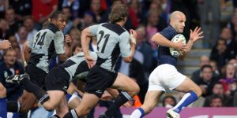

ACTE I / Naissance du XV de France : des symboles et une première victoire
Les années 1906-1914 ont posés les bases de l’identité du XV de France. Cette période fut difficile sportivement avec une seule victoire pour 28 matchs disputés (ratio de 3,6%), mais essentielle pour établir l’âme du XV tricolore.
Le premier match officiel du XV de France USFSA (Union des Sociétés Françaises de Sports Athlétiques, ancêtre de la FFR fondée en 1919) eut lieu le 1er janvier 1906, il y a donc 112 ans. Devant les 3000 spectateurs réunis au Parc des Princes, les premiers internationaux français du premier capitaine Henri Amand (la sélection comptait un anglais-William Crichton, et un américain-Allan Muhr) perdirent contre l’équipe mythique des Néo-Zélandais, les Originals, 10 essais à 2, soit 38 à 8.
Pourtant, il y avait bien eu dès 1893 les premières sélections françaises USFSA comprenant majoritairement des joueurs du RCF et du Stade Français pour jouer des matchs contre le Civil Service Athletic anglais, le Richmond FC, Edinburgh etc. Mais, ces matchs n’avaient pas de statuts officiels.
- Le maillot : Le XV de France n’inaugure sa tenue officielle tricolore que le 22 mars 1906. Ce maillot bleu roi, sa culotte blanche et ses chaussettes rouges sont restés inchangés jusque dans les années 2000. Comme pour le maillot All Black, le maillot bleu avait une dimension sacrée. Petit à petit malheureusement, les aléas du marketing ont amené la FFR à le faire évoluer et à le marchandiser en essayant de mettre en avant des stars (Chabal ou Michalak). Une starification illusoire et antinomyque avec les valeurs du jeu de rugby.
- Justement en Nouvelle Zélande, il n’y a pas de nom à l’arrière des maillots noirs. Juste un numéro. Le maillot noir est plus grand que celui qui le porte. Chaque All Black doit honorer son poste et son numéro avant de le transmettre à quelqu’un d’autre. Et ainsi de suite. Le sens de la transmission et de la continuité de l’esprit du jeu et de l’équipe nationale.
- Depuis que le rugby est devenu professionnel, qui enseigne l’histoire du jeu aux internationnaux français ? Certainement pas leurs employeurs, les clubs. Dans ce domaine, la Nouvelle zélande a encore un temps d’avance. Les clubs ne sont pas les employeurs de leurs joueurs. C’est la New Zeland Rugby Union qui les paye ; et cela change tout.
- Son écusson, adopté en 1911 grâce à son capitaine Marcel Communeau, le coq gaulois symbole de fierté et de combat et les paroles du pilier toulonnais Aldo Gruarin en 1960 faisant appel à ses coéquipiers : »C’est un coq que l’on porte sur la vitrine, pas une pintade ! Alors chantez ! »
- Cette écusson est synonyme aussi de première victoire internationale des bleus contre l’Ecosse le 2 janvier 1911 sur le score de 16 à 15.

La première guerre mondiale mis fin à la progression des tricolores.
ACTE II / Progression et première victoire à l’extérieur : 1919-1930
Le XV de France repart quasiment de zéro en 1919, mais parvient à s’imposer 13 fois sur 50 matchs, un ratio de 26 %, encore modeste, mais qui augmente.
- Elle remporte son premier succès à l’extérieur à Dublin contre l’Irlande le 3 avril 1920 sous le commandement de son capitaine Philippe Struxiano (15 à 7).
- Avec son nouveau capitaine Adolphe Jauréguy, elle gagne pour la première fois contre l’Angleterre le 2 avril 1927 (3-0)
- et contre le Pays de Galles le 9 avril 1928 (8-3).
Le XV de France a donc enfin réussi à gagner au moins une fois contre ses 4 concurrents européens.
C’est pourtant une période ternie par une première vague de violence menant à l’exclusion du rugby des Jeux Olympiques après la calamiteuse finale de 1924 contre les USA. Une finale entachée de nombreux coups venant des joueurs, mais aussi des spectateurs français. Ceux sont les américains qui remportèrent la médaille d’or : 17 à 3.
ACTE III / Exclusion : Soupçons de professionnalisme, violences et exclusion du tournoi : 1932-1939
Après le match France-Galles du tournoi de 1930 aussi brutal sur le terrain que dans les tribunes et suite à des cas de paiement et de recrutement inter-clubs de joueurs en France, les tricolores sont exclus du tournoi jusqu’au début de la seconde guerre mondiale.
La France n’affrontera pendant cette période que des nations mineures : Italie, Roumanie et Allemagne. Logiquement, le pourcentage de victoires des bleus atteint des sommets plus jamais atteints par la suite : 76,2 %.
ACTE IV / Renaissance ou renouveau de l’après guerre : 1945-1950
Le XV de France repart à nouveau quasiment de zéro en 1945, mais parvient à s’imposer 14 fois pour 26 matchs, un ratio de 53,8% de victoires. La France commence à devenir une nation importante du rugby international.
- Première victoire contre le Pays de Galles à Swansea en 1948, 11 à 3, avec Robert Soro, surnommé le lion de Swansea, en héros charismatique.
- Première victoire contre l’Australie à Colombes, toujours en 1948.
ACTE V / Poursuite de la progression : 1951-1958
Les succès s’enchaînent et les tricolores s’imposent 30 fois pour 49 matchs, un ratio de 61,2% de victoires. Le XV de France est désormais une nation importante du rugby international.
- Première victoire contre l’Angleterre à Twickenham en 1951, encore 11 à 3, avec Guy Basquet, en figure de proue.
- Première victoire aussi contre les All Blacks le 27 février 1954, grâce au jeu à la lourdaise du capitaine Jean Prat, Mister Rugby.
- Première victoire contre les Springboks le 16 aout 1958 à l’Ellis Park de Johannesburg, sous la conduite du Docteur Pack, Lucien Mias (9-5).
La France est à nouveau menacée d’exclusion du tournoi. Les Britanniques la soupçonnent encore de professionnalisme (recrutements illicites, intéressements, primes de matchs…). Une liste de joueurs jugés coupables, dont Jean Dauger, Robert Soro ou Maurice Siman sont « blacklistés ». Pour autant la fronde des clubs l’emporte et le championnat n’est pas réformé. Un signe annonciateur de la future LNR des années 2000.
ACTE VI / Premier Grand Chelem : 1959-1970
Les succès perdurent. Le XV de France s’impose 52 fois pour 93 matchs, un ratio de 55,9 % de victoires. Le XV de France reste une nation importante du rugby international.
- Première victoire dans le tournoi des 5 nations sous la direction de Lucien Mias en 1959.
- Premier Grand Chelem français en 1968, avec le tarbo-toulonnais Christian Carrère au capitanat (Spanghero.W, Dauga, Maso, Villepreux…).
- Suivi de 11 matchs sans victoire à partir de mai 1968 (un nul et dix défaites).
ACTE VII / Les Barbarians français : 1971-1980
Les années Fouroux-joueur sont dans la lignée des années précédentes avec 41 fois pour 77 matchs, un ratio de 53,2 % de victoires.
Le XV de France joue souvent les premiers rôles, derrière toutefois les Gallois de Barry John, Gareth Edwards, JPR Williams, Gerald Davies et John Taylor, nation dominatrice du rugby européen à cette époque.
- Débuts difficiles entre 1971 et 1972 (3 victoires sur 14 matchs : 21,4%) et 1974-1975 (idem, 21,4 % de victoires).
- Deuxième Grand chelem en 1977, avec pour la première fois les 15 mêmes joueurs pour les 4 matchs, sous la direction du capitaine Jacques Fouroux.
- Cette même équipe sera à l’origine des premiers Barbarians français en 1979
- Victoire héroïque du XV de France de Jean Pierre Rives à l’Eden park en Nouvelle Zélande en 1979.
ACTE VIII / Les années fastes de Fouroux entraineur de 1981 à 1989
Le pourcentage de victoire remonte avec un ratio de 61 % (47 victoires pour 77 matchs). Le XV de France progresse.
- La France gagne 6 tournois et deux Grand Chelems en 1981 avec encore Jean Pierre Rives capitaine.
- deux petites victoires sur dix matchs (20% de victoires) de 1981 à 1982 (malgré Berbizier, Rodriguez, Paparemborde et les débuts de Blanco).
- puis la génération Daniel Dubroca en 1987.
- Elle parvient en finale de la première Coupe Du Monde de Rugby 1987, après une victoire de légende et un essai en toute fin de match de Serge Blanco contre l’Australie en demi finale.
- suivi d’une période de défaites de 1989 à 1990 (malgré Blanco, Sella, Lagisquet, Champ, Ondarts, 4 victoires en 15 matchs : 26,6%).

ACTE IX / Maintien à un haut niveau et succession de sélectionneurs : 1990-2001
Le XV de France progresse encore. Les succès s’enchaînent et les tricolores s’imposent 83 fois pour 133 matchs, un ratio de 62,4% de victoires. Les anglais dominent toutefois les années 90.
Plusieurs sélectionneurs se succèdent de Dubroca à Laporte en passant par Trillo, Berbizier, Villepreux et Skréla.
- La France gagne pour la première fois deux Grands Chelems de suite en 1997 et 1998 sous la direction d’Abdellatif Benazzi
- et de Raphael Ibanez.
- Les tricolores perdent en quart de finale de la CDM de Rugby 1991 et en demi finale de la CDM de Rugby 1995.
- Elle parvient à nouveau en finale de la CDM de Rugby en 1999.
ACTE X / Apogée : l’ère Laporte-Derniers résultats positifs post professionnalisme : 2002-2007
Les tricolores sont à l’apogée de leur renommée internationale. Les succès sont de plus en plus nombreux et s’enchaînent. Les tricolores s’imposent 46 fois pour 72 matchs, un ratio de 63,9 % de victoires.
- La France gagne quatre tournois (2006, 2007) dont deux nouveaux grands Chelems en 2002 (premier tournoi des 6 nations, ajout de l’Italie), puis 2004 avec toujours Raphael Ibanez et voit l’éclosion d’une nouvelle génération symbolisée par Fabien Pelous, Fabien Galthié ou Olivier Magne.
- Les résultats sont plus mitigés en coupe du monde en 2003 et 2007, le XV de France ne parvenant à atteindre que les demi finales. Malgré l’élimination des All Blacks en quart de finale, la déception est particulièrement grande pour la coupe du monde 2007 qu’elle organise. La France perd en demi contre l’Angleterre, puis contre l’Argentine lors de la petite finale. 
ACTE XI / La financiarisation ou début de la chute de l’empire bleu : 2008-2011
Sous l’égide Marc Lièvremont et malgré quelques exploits notables, le XV de France montre des signes d’essoufflement. Le championnat mis en place par la LNR recrute de plus en plus de joueurs à l’étranger et donne de moins en moins sa chance aux joueurs quelle forme. Le ratio de victoires (55%, 22 victoires pour 40 matchs) redescend aux valeurs des années 71-80. Le XV de France régresse pour la première fois depuis 30 ans.
Malgré tout, la finale en coupe du monde de Rugby en 2011, perdue contre les All Blacks, ramène momentanément la France à la 3° place mondiale.
Les deux autres fait de gloire de cette époque sont
- Le neuvième et dernier Grand Chelem à ce jour des tricolores en 2010, sous la férule de Morgan Parra.
- L’obtention du premier trophée Dave Gallaher au dépens des All Blacks après leur victoire en Nouvelle Zélande en 2009.
ACTE XII / Le déclin programmé du XV de France : 2012-2015
La dégringolade continue sous l’ère Saint André avec seulement 14 victoires pour 29 matchs disputés (ratio de 48,2%).
Série de défaites en 2013 : 3 victoires en 11 matchs (27,2 % de victoires) sous Saint André.
En point d’orgue l’humiliation en quart de finale de la coupe du monde 2015 contre nos meilleurs ennemis les All Blacks 62 à 13, 9 essais contre 1, soit à peu de chose près un retour aux déculottés de 1906 contre les Originals, 38 à 8, 10 essais à 2, et contre les Invicibles en 1924, 30 à 6, 8 essais à 2.
Cette déculotté ramène le rugby français 100 en arrière. Il faut dire que l’Ovalie n’a jamais réellement digéré l’arrivée du professionnalisme. Surtout, l’organisation bicéphale du rugby français pensée en 1998 continue d’empêcher toute tentative de réforme.
Petit rappel historique :
En 1996, la FFR présidée par Bernard Lapasset décide de suivre l’avis de l’International Rugby Board (IRB)
et de renoncer à l’amateurisme séculier du jeu de Rugby abandonné dès août 1995 par les Néo-Zélandais.
Fini l’amateurisme marron et les dessous de table, le 15 juin 1996 à Albi lors d’une assemblée houleuse la
FFR décide de créer la Commission nationale du rugby d’élite (CNRE) présidée par Séraphin Berthier,
trésorier du FC Grenoble. Cette commission adopte le principe d’une Ligue « interne », donc directement
contrôlée par la FFR. Grace à ce montage la FFR espère pouvoir à la fois contrôler la puissance économique
grandissante du rugby et préserver l’esprit du jeu.
La bataille qui oppose la FFR de Bernard Lapasset aux clubs du groupe A du CNRE fut sanglante. Depuis
1996, les clubs pro militaient pour la création d’une ligue externe, indépendante de la FFR, sur le modèle
du football français et européen : une ligue qui n’aurait plus de compte à rendre à la FFR et pourrait
organiser son rugby spectacle et business à sa guise.
La discorde permanente et par trop bruyante pousse le ministère de la Jeunesse et des Sports de Marie
George Buffet à organiser une réunion de conciliation en mars 1998. On ne prête qu’aux riches, c’est bien
connu. Le lobbying bien plus efficace et puissant de la CNRE auprès du gouvernement Jospin évince
brutalement les tenants du rugby amateur.
Le ministère tranche en faveur des clubs professionnels et crée la Ligue nationale de Rugby (LNR) en
juillet 1998 avec Serge Blanco élu à l’unanimité à sa tête. La perte du pouvoir de la FFR la déposséde de
tout pouvoir sur le secteur professionnel du rugby et dynamite totalement le modèle rugbystique français.
La lente et progressive descente aux enfers du rugby français, bien symbolisée par les résultats
calamiteux de son XV de France, nait donc en 1998. Et, il n’y a pas de raison que la courbe s’inverse si
on ne change pas les raisons de la chute, à savoir le modèle rugbystique français.
Rapidement la LNR métamorphosa le paysage rugbystique français en faisant disparaitre les clubs
historiques des villages et des villes moyennes. La richesse financière de la LNR est depuis lors le talon
d’Achille du rugby hexagonal, avec d’un côté le rugby des « nantis », mercantile et marchand et de l’autre
le rugby traditionnel, « humble » des clubs amateurs ou semi amateurs.
La destinée du rugby français ne repose quasiment plus que sur le bon vouloir de la LNR, pourtant chargée
exclusivement que du bien être des 30 clubs professionnels. Elle a abandonné la vraie force de l’Ovalie :
sa diversité, son apport culturel et le travail de ses 1855 autres clubs.
Se faisant, le rugby a tourné le dos à son histoire, donc à sa raison d’être. Il n’a travaillé que pour
l’éphémère, le luxuriant, le spectaculaire pour promouvoir son CAC 14. Le maillot bleu frappé du coq a été
lentement, mais surement, mis au placard.
Du point de vue culturel, le TOP 14 est une coquille vide qui sonne de plus en plus creux. Il tourne en
vase clos. Il crée un spectacle qui se suffit à lui même et emploie des joueurs qu’il recrute parfois en
France, mais surtout sur toute la surface de la planète ovale, pour servir ses intérêts particuliers.
Les difficultés des clubs amateurs ou semi-amateurs indiffèrent la LNR : aussi programme-t-elle encore des
matchs le dimanche en échange d’un abonnement à Canal plus, le grand argentier du rugby pro. La boucle est
bouclée… Quant au XV de France, dès qu’un président du CAC 14 a plus de deux sélectionnés, il crie au
scandale, alors que c’est la LNR qui pond tous les ans le calendrier, donc les doublons. Quelle pression
négative sur les internationaux!
Les joueurs n’ont pour la plupart aucune idée de l’histoire du rugby français. Ils sont devenus des
intermittents du spectacle très bien payés (pas assez toutefois pour assurer leur avenir), mais qui
exercent leur métier dans des conditions sociales dignes du XVIII è siècle (blessures récurrentes et
gravissimes, hyper-concurrence, cadences infernales, dopage quasi obligatoire etc.). Pour peu qu’ils
soient sélectionnés en équipe de France, le burn out et la dépression deviennent un effet indésirable plus
que probable.
Il n’y a plus aucune continuité que ce soit entre les sélectionneurs qui repartent à zéro à chaque mandat
sans qu’aucune direction ne soit impulsée par la FFR, ou entre les équipes du XV de France. A part au
poste de talonneur où Guilhem Guirado fait figure de taulier-capitaine-courage incontournable, aucun
joueur n’arrive à s’imposer durablement, ni dans le pack, particulier au poste de N°8, ni à la charnière,
ni chez les trois quarts. Il faut dire qu’entre les blessures et l’impatience des sélectionneurs, on ne
leur laisse que peu de chance de s’épanouir.
ACTE XIII / L’effondrement (lent et inexorable) des tricolores : 2016-2019
La réalité actuelle d’un néo sélectionné du XV de France, c’est seulement 41,3 % (19 victoires pour 46
matchs) de chance de gagner (dont 33,3 % sour l’ère Noves -7 victoires en 21 matchs, remercié promptement
par la FFR, et 50 % pour son successeur Brunel – 12 victoires, dont 3 en matchs de poule de la Coupe du
monde de rugby 2019 en 24 matchs), quasiment 0 % contre les nations majeures du rugby international. Des
stats qui se rapprochent de celles des débuts du rugby français, celui des années 19-31 au XX è siècle (26
% de victoires, pour 50 matchs) et qui ne s’en éloignent que lorsque les bleus jouent contre équipes
internationales mineures (particulièrement lors des phases de poule en Coupe du Monde).
Après un tournoi des VI nations 2019 de très faible niveau (défaites 19-24 contre le Pays de Galles,
contre les Angalis 44-8 et contre l’Irlande 26-1 ; victoires contre l’Ecosse 26-14 et l’Italie 14-25), le
XV de France est désormais considérée comme une nation de seconde zone. Le tournoi aura toutefois mis en
lumière la qualité d’une jeune génération promise à un bel avenir : Romain N’Tamack, Antoine Dupont, Demba
Bamba ou Grégory Alldritt.
Le XV de France arrive à redorer partiellement son blason en battant l’Argentine pour son premier match de
la Coupe du monde 2019 au Japon, un véritable faux huitième de finale. Elle se qualifie même pour les
quarts de finale après deux victoires contre les USA (33-9) et les Tongas (23-21, seule la victoire est
belle tant le match fut laborieux pour les bleus). Un typhon « miraculeux » ou non évite aux bleus de
subir une deuxième humiliation contre l’Angleterre. On ne saura jamais si ce match aurait pu être celui du
rachat, toujours est-il que le XV de France chute contre le Pays de Galles (20-19), dans un match qu’il
aura globalement dominé mais qu’il finira à 14 contre 15.
ACTE XIV / Renaissance ? : 2020-2023
Fabien Galthié, « adjoint » de luxe de Jacques Brunel pour la Coupe du Monde, reprend les rênes du XV de
France pour préparer le Tournoi des VI nations 2020. Celui du renouveau… avorté. Il bénéficie de
conditions d’entraînement (42 joueurs au lieu de 31) et d’un temps de préparation allongé. L’entente
nouvelle entre les clubs pros, donc la LNR, et la FFR porte d’entrée ses fruits. Sous la direction de son
nouveau capitaine Charles Ollivon, les bleus prennent enfin leur revanche sur leur ennemi anglais
méconnaissables après leur défaite en finale de Coupe du monde contre les Sud-Africains (24-17) et contre
les Gallois à Cardiff (23-27). Malgré leur défaite en Ecosse (28-17) et grace à leur victoire peu probante
contre l’Italie (35-22), les bleus s’appretent à affronter l’Irlande pour un possible gain du tournoi
après avoir vaincus en test match les Gallois (38-21). Grace à sa victoire dans ce dernier match du
Tournoi contre l’Irlande (35-27), l’équipe de Fabien Galthié et Raphaël Ibanez a un pourcentage de
victoire rarement atteint dans l’Histoire du XV de France de 83 % (5 victoires pour 1 défaite) et finit à
la deuxième place du tournoi des six nations à égalité de points avec le vainqueur, le XV de la rose (18
points, 4 victoires, 5 défaites, plus 21 au goal average contre plus 44 pour les anglais).
Elle entame la nouvelle compétition « Coupe d’automne des nations » avec plus de certitudes que de
questions. Elle a trouvé une personnalité, mélange de liberté et d’autonomie des joueurs dans un cadre
strict et bien défini. Il semble que ces derniers soient enfin passés du statut d’élèves plus ou moins
appliqués à maîtres clairvoyants et responsables. Le style de jeu fait d’occupation au pied et de contre
attaques dévastatrices à la All Black semble coller au talent de sa nouvelle génération.
Le premier match contre les fidjis n’apportera pas d’enseignement puisqu’il est gagné suite au forfait
obligé des redoutables îliens (29 tests positifs au Svar Cov 2). Le déplacement le 22 novembre 2020 à
Murrayfield se révèle bien plus délicat et oppose deux des nations les plus en forme de l’hémisphère nord.
Les français n’ont pas battu les écossais depuis 2014. Le match est serré et tendu, mais globalement mieux
maitrisé par des bleus qui ne répondent pas aux provocations écossaises (15-22). Le contentieux, nait de
la précédente défaite des français en Ecosse dans le tournoi des 6 nations, est soldé. La victoire contre
l’Italie (36-5) avec une équipe de France totalement remaniée, les derniers accords LNR/FFR ne permettant
aux internationnaux que de jouer 3 matchs en automne, permet aux bleu de retrouver en finale le XV de la
Rose pour un crunch automnal inédit. Une sorte de doublon inversé avec une équipe de france « bis » ou «
réserve », tandis que les titulaires habituels jouaient en TOP 14. La finale se solde par une défaite en
mort subite (22-19), mais prouve que les bleus ont un réservoir d’une profondeur insoupçonnée jusque là.
Surtout, elle prouve qu’il n’y a qu’une équipe de France et que le duo Galthié-Ibanez est sur la bonne
voie.
Le XV de France entame son tournoi des VI nations 2021 avec un statut de quasi favori et une quatrième
place dans le classement mondial de World rugby, derrière l’Afrique du Sud, la Nouvelle Zélande et
l’Angleterre, mais devant l’Irlande, l’Australie, l’Ecosse ou le Pays de Galles. Le match contre l’Italie
(14 ième rang mondial, alors que la Georgie se place au 12 ième rang mondial) à Rome n’est qu’une
formalité et les bleus humilient de bien pâles italiens 50 à 10. Un galop d’essais (7 essais contre 1) qui
rassure un XV de France sérieux et appliqué avant d’aller affronter des irlandais défaits de peu au Pays
de Galles. Le XV de France semble si serein en défense qu’il finit par gagner au forceps un match serré et
étriqué qu’il illumine de deux essais comme deux éclairs dans le froid irlandais (13-15).
Les 10 victoires sur 12 matchs (dont 1 non disputé) de l’ère Galthié-Ibanez permettent au duo d’atteindre
est pourcentage de victoire stupéfiant et inégalé en 115 années d’existence (83,3 %).